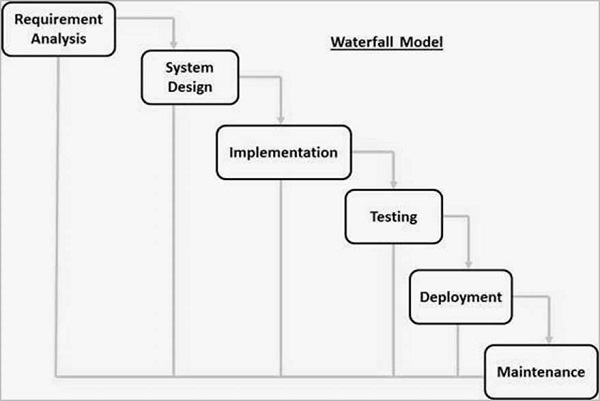

The waterfall model is a software development process that follows a linear and sequential approach.
It consists of several phases, including requirements, design, implementation, testing, deployment, and maintenance.
Each phase must be completed before moving on to the next, and changes are not easily accommodated once the process has started.
Diagram which depicts Waterfall Model

The sequential phases in Waterfall model are −
Requirement Gathering and analysis −
All possible requirements of the system to be developed are captured in this phase and documented in a requirement specification document.
System Design −
The requirement specifications from the first phase are studied in this phase, and the system design is prepared. This system design helps in specifying hardware and system requirements and helps in defining the overall system architecture.
Implementation −
With inputs from the system design, the system is first developed in small programs called units, which are integrated in the next phase. Each unit is developed and tested for its functionality, which is referred to as Unit Testing.
Integration and Testing −
All the units developed in the implementation phase are integrated into a system after testing of each unit. Post integration, the entire system is tested for any faults and failures.
Deployment of system −
Once the functional and non-functional testing is done; the product is deployed in the customer environment or released into the market.
Maintenance −
There are some issues that come up in the client environment. To fix those issues, patches are released. Also, to enhance the product, some better versions are released. Maintenance is done to deliver these changes in the customer environment.